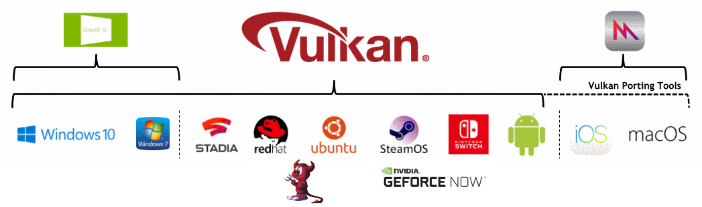

While Vulkan runs on many platforms, each has small variations on how Vulkan is managed.

The Vulkan API is available on any Android device starting with API level 24 (Android Nougat), however not all devices will have a Vulkan driver.
Android uses its Hardware Abstraction Layer (HAL) to find the Vulkan Driver in a predefined path.
All 64-bit devices that launch with API level 29 (Android Q) or later must include a Vulkan 1.1 driver.
Vulkan is supported on many BSD Unix distributions.
Vulkan is supported on the Fuchsia operation system.
Vulkan is not natively supported on iOS, but can still be targeted with Vulkan Portability Tools.
Vulkan is supported on many Linux distributions.
Vulkan is not natively supported on MacOS, but can still be targeted with Vulkan Portability Tools.
The Nintendo Switch runs an NVIDIA Tegra chipset that supports native Vulkan.
Vulkan is supported on QNX operation system.
Google’s Stadia runs on AMD based Linux machines and Vulkan is the required graphics API.
Vulkan is supported on Windows 7, Windows 8, and Windows 10.
Some embedded systems support Vulkan by allowing presentation directly-to-display.